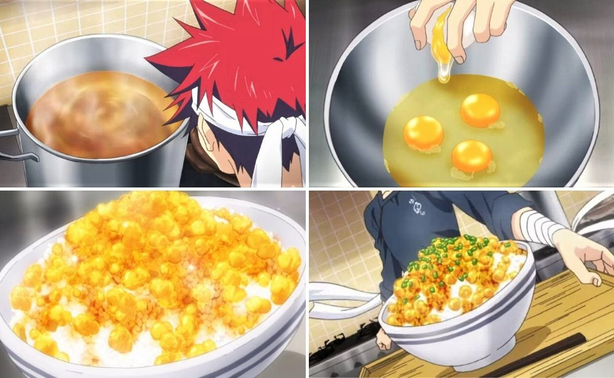
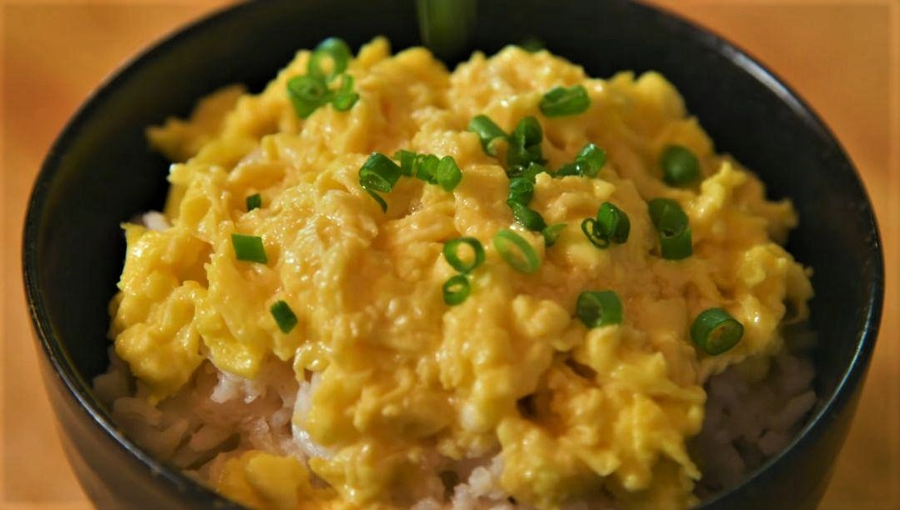

Furikake Rice - Shokugeki no Souma

Furikake Rice first made its debut in episode 2 of
Shokugeki no Souma.
Although it is only made of rice, scrambled eggs, chicken, and green
onions, this simple dish relies on a secret ingredient to make it special:
gelatin cubes.

Ingredients:
- 2 tbsp of sesame oil
- 7-8 chicken wings
- 2 tsp of bonito or fish soup stock
- 5-6 cups of water for the broth, and ½ cup of water for the gelatin
- 2 tsp of grated ginger
- 1 tbsp of sugar
- 3 tbsp of light soy sauce
- 1/4 cup of sake
- 2 tbsp of gelatin
- 4 eggs
- 2 green onions
- 1 cup of white rice
Steps:
Marinating the beef
- Chop and mince the onion.
- For a tender texture, pound the beef on both sides with a kitchen mallet until it turns flat.
- Wrap the tenderised beef with minced onion on both sides. Cover it with cling wrap and set aside for 30 to 45
minutes.
- Remove the minced onion from the beef. Season the beef with salt and pepper. Keep the minced onion for later.
- Add a small amount of cooking oil and fry the steak to your preferred doneness.
Caramelised minced onion
- Set aside the cooked steak and add butter into the same pan until it melts.
- Add red wine, soy sauce, and potato starch to the melted butter. Mix well. Once done, set the red wine mixture
aside.
- Add 2 tbsp of butter and minced onions into the same pan on medium heat. Add the red wine mixture and salt and
pepper for seasoning. Cook until the minced onions turn brown.
Chaliapin Steak Don
- Mix rice with umeboshi paste.
- Cut the beef into slices and put it on top of the bowl of rice.
- Garnish it with caramelised onion.